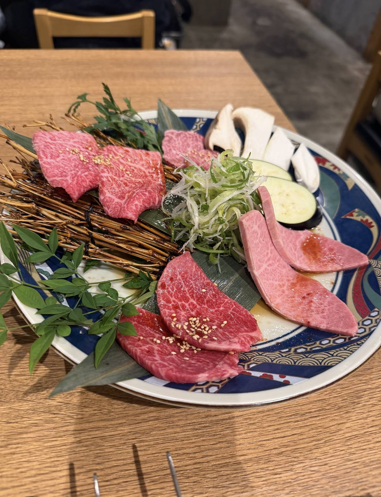
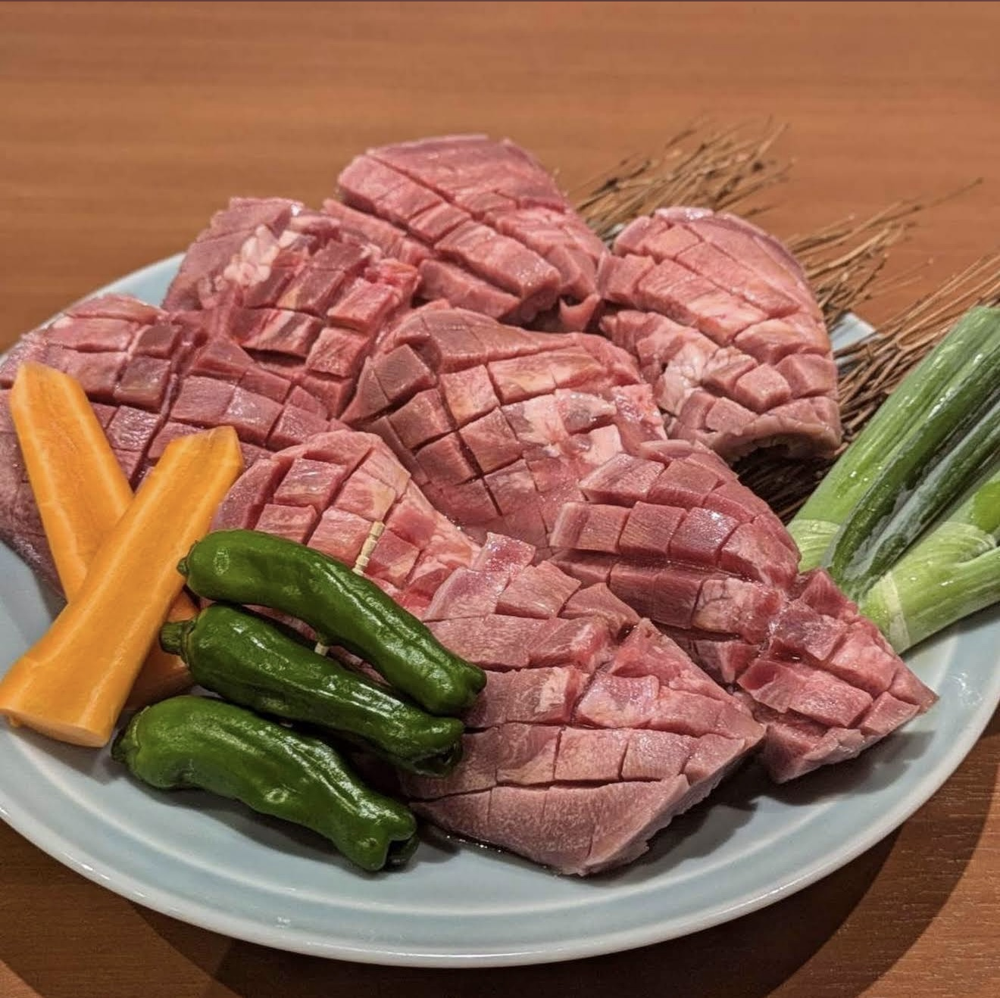
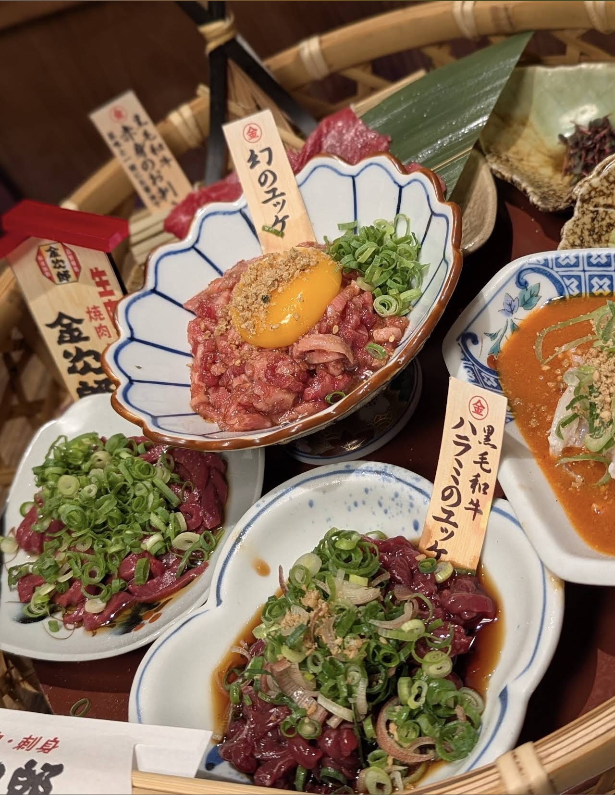

- トップ >
- 焼肉屋
広島焼肉特集
広島で人気の焼肉店やおすすめ店を紹介します。 実際に食べた感想や写真を掲載し、それぞれのお店の魅力をお伝えします。
焼肉 冷麺 壇光 -DANKO-

焼肉 冷麺 壇光 -DANKO-は、広島市中心部にある人気の焼肉店です。 焼肉だけではなく、冷麺にもこだわりがあり、肉の美味しさと韓国料理の味を楽しむことができます。 実際に食べてみると、お肉が柔らかく、冷麺との相性も良く、とても満足できました。
食辛房 広島白島Qガーデン店

食辛房 広島白島Qガーデン店は、家族や友人と楽しめる広島の人気焼肉店です。 和牛やホルモンなど種類豊富なメニューがあり、落ち着いた店内で焼肉を楽しむことができます。 実際に訪れてみると、料理の種類が多く、みんなで食事をする場所としておすすめだと感じました。
生肉専門店 焼肉 金次郎 広島店

生肉専門店 焼肉 金次郎 広島店は、 上質なお肉を楽しめる焼肉店です。新鮮なお肉とこだわりのメニューが特徴で、 特別な食事や友人との食事にも向いています。 実際に食べてみると、お肉の質が高く、一品一品の美味しさを感じることができました。